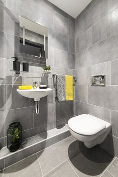

<ion-content padding>

 
  <!-- <div class="welcome-wrapper"> -->
      <ion-slides autoplay="5000" loop="true" speed="3000" pager = "true">

          <ion-slide>
            
            <!-- <h1>Slide 1</h1> -->
        </ion-slide>
          <ion-slide>
            
            <!-- <h1>Slide 2</h1> -->
          </ion-slide>
          <ion-slide>
            
            <!-- <h1>Slide 3</h1> -->
          </ion-slide>
        </ion-slides>

<div id="start">
        <ion-row>
          <ion-col>
              <button ion-button block  outline align-self-stretch (click)="logInBtnClicked()">Log In</button>
          </ion-col>
          <ion-col>
              <button ion-button block  outline align-self-stretch (click)="Sign()">Sign Up</button>
          </ion-col>
        </ion-row>

      </div>
<!-- 
  <ion-row>
    <ion-col>
        <button ion-button block  outline align-self-stretch (click)="logInBtnClicked()">Log In</button>
    </ion-col>
    <ion-col>
        <button ion-button block  outline align-self-stretch (click)="Sign()">Sign Up</button>
    </ion-col>
  </ion-row> -->


</ion-content>


